Illustrated video transcript · 15 chapters · 10:21
One token through the FP16 C1024 FFN expansion
Trace token 83 from its packed input through CTA and lane ownership, address arithmetic, asynchronous copies, shared panels, register fragments, warp-wide MMA, Half activation and the final output store.
The film illustrates the source's dependency order. It does not measure GPU cycles, promise cache hits, or depict physical register-bank placement. The captions are also drawn into the video; the optional English caption track provides a separate browser-accessible version. This film uses captions and has no spoken audio.
01 A token enters the expansion
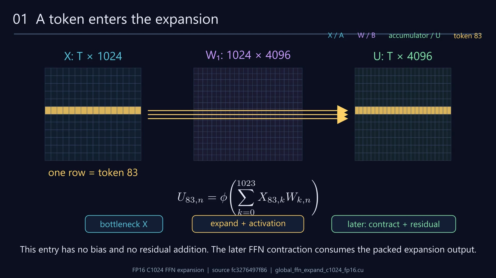
- 0:00
The bottleneck dense FFN expands every token from 1024 channels to 4096, then applies its activation.
- 0:05
Keep your eye on the gold row: token 83. Its outputs depend on all 1024 input channels, and on no other token.
- 0:12
We will follow one contribution, X[83,114] times W[114,34], into output channel 34, then reconnect it to the whole token.
- 0:18
This entry has no bias and no residual addition. The later FFN contraction consumes the packed expansion output.
02 From model dimensions to CUDA blocks
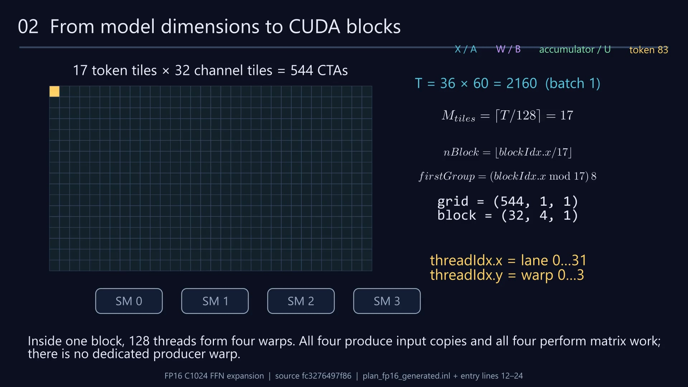
- 0:26
For the 4K architecture example, T is 2160. A block covers 128 tokens by 128 output channels, so the grid has 544 blocks.
- 0:32
The linear block index changes token tiles first. CTA zero owns tokens 0 through 127 and output channels 0 through 127.
- 0:39
Hardware assigns ready CTAs to SMs. These arrows illustrate possible dispatch, not a fixed SM assignment or measured issue timing.
- 0:47
Inside one block, 128 threads form four warps. All four produce input copies and all four perform matrix work; there is no dedicated producer warp.
03 A hierarchy of output tiles
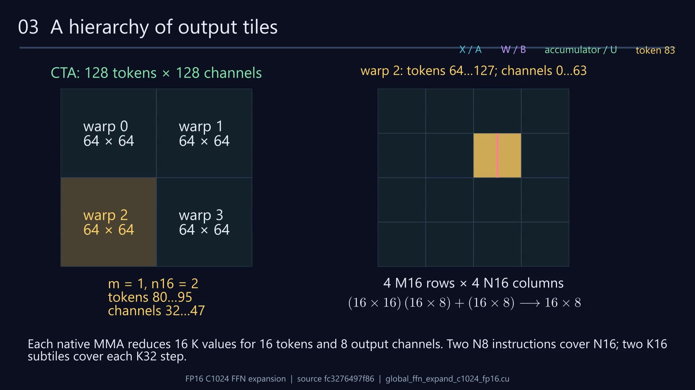
- 0:56
Warp parity selects the left or right channel half. Floor of warp divided by two selects the upper or lower token half.
- 1:03
Token 83 is in warp 2's lower token half. Four M16 fragments and four N16 groups subdivide that warp's 64 by 64 outputs.
- 1:09
Our output [83,34] lives at M fragment one and N16 group two. An N16 group splits again into channels 32–39 and 40–47.
- 1:16
Each native MMA reduces 16 K values for 16 tokens and 8 output channels. Two N8 instructions cover N16; two K16 subtiles cover each K32 step.
04 A logical token becomes lane fragments
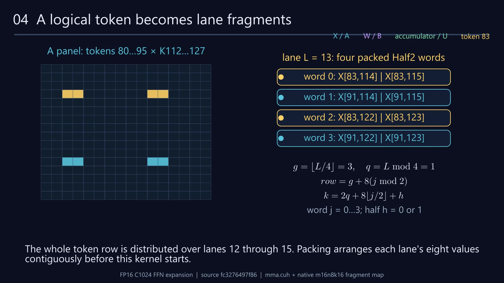
- 1:25
Zoom into the second K16 panel of reduction step three. Token 83 is local row three; channel 114 is local K two.
- 1:31
Lane 13 owns eight Half values in four 32-bit words. Its fragment interleaves two token rows and two separated K pairs.
- 1:38
The map is explicit: lane gives g and q; word index j selects the row and K half; h selects the low or high 16-bit value.
- 1:45
The whole token row is distributed over lanes 12 through 15. Packing arranges each lane's eight values contiguously before this kernel starts.
05 Compute the exact input address
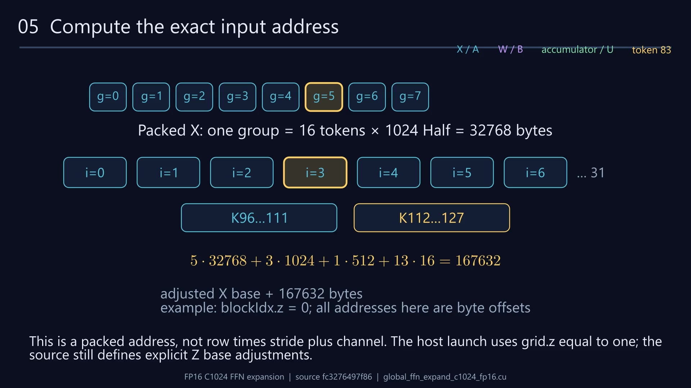
- 1:54
A global token group stores sixteen complete token rows in native panels. Group five contains tokens 80 through 95 and begins at byte 163840.
- 2:02
Within that group, each K32 step occupies 1024 bytes. Step three adds 3072 bytes; the second K16 panel adds another 512.
- 2:10
Inside the panel, lane 13's sixteen-byte vector adds 208 bytes. X[83,114] is the low Half of its first word, so no further offset is needed.
- 2:18
This is a packed address, not row times stride plus channel. The host launch uses grid.z equal to one; the source still defines explicit Z base adjustments.
06 Producer lanes move the packed slab
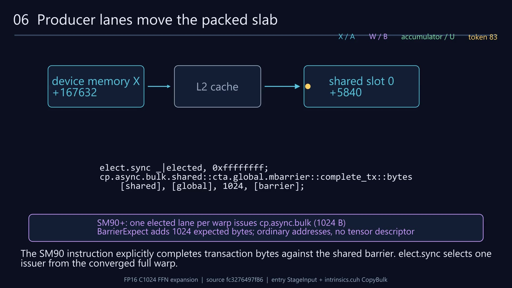
- 2:28
Producer warp one copies group five: warp plus four. On SM80 and SM89, every lane issues two sixteen-byte asynchronous stripes for this 1024-byte slab.
- 2:36
Our value is in stripe one, lane 13. The .cg copy path uses global-level caching and attaches asynchronous completion to the stage barrier.
- 2:44
The shared destination sums the slot, producer warp, second copy group, second stripe and lane vector. The bytes arrive unchanged at shared offset 5840.
- 2:53
The compiled SM90-plus branch elects one bulk-copy issuer instead. Both branches populate the same layout, but their copy and completion instructions differ.
- 3:02
The SM90 instruction explicitly completes transaction bytes against the shared barrier. elect.sync selects one issuer from the converged full warp.
08 The three-slot pipeline, in source order
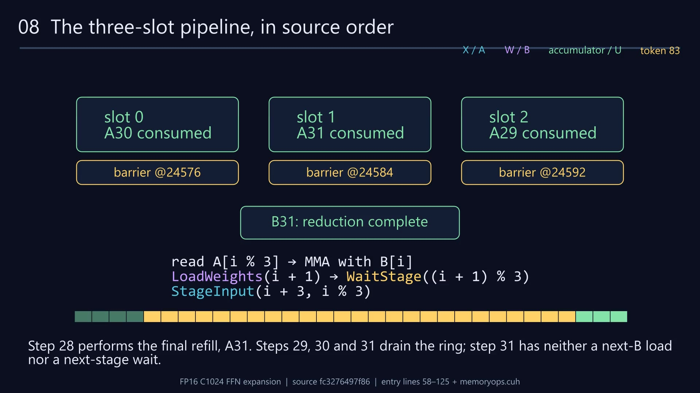
- 3:56
Lane zero of warp zero initializes each barrier for 128 arrivals, then the CTA synchronizes. The prologue loads B0, issues A0, A1 and A2, and waits for A0.
- 4:04
On SM80 and SM89, mbarrier.init sets the arrival count. Every thread obtains a phase token with arrive, then test_wait polls completion of that exact phase.
- 4:13
SM90 uses the CTA-scoped arrive and try_wait forms, plus expected transaction bytes for bulk copies. Readiness includes copy completion, not just thread arrivals.
- 4:23
Read A0 into registers and perform the MMA work. Then preload B1, wait for A1, and only then refill retired slot zero with A3.
- 4:32
Every thread arrives after its preceding consumption. Waiting for the next stage establishes that old readers have advanced before the consumed slot is recycled.
- 4:48
After steps one and two, step three revisits slot zero. A fresh arrival phase token distinguishes this use from the earlier completed phase.
- 4:56
The same dependency pattern continues through all 32 K32 steps. Animation spacing is explanatory; actual warp interleaving and latency depend on hardware.
- 5:07
Step 28 performs the final refill, A31. Steps 29, 30 and 31 drain the ring; step 31 has neither a next-B load nor a next-stage wait.
09 B takes a different route and lane map
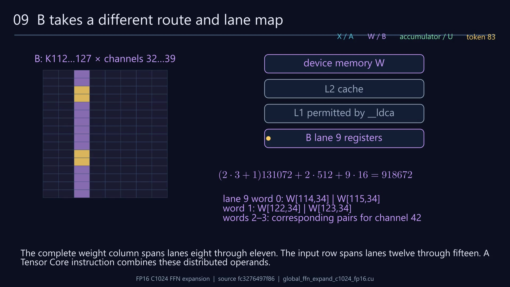
- 5:15
Weights are not staged in shared memory. Cache-all vector loads fetch their prepacked words directly from global memory into each warp's B registers.
- 5:24
For the lower N8 fragment, lane L has column floor(L/4). Its first K pair starts at twice (L modulo four), and its second starts eight later. W[114,34] belongs to lane nine.
- 5:36
The cache-all load permits both L2 and L1 caching. This hierarchy shows eligible storage levels; the actual cache hits, misses and residency were not measured.
- 5:45
The K-panel stride is 4096 times 32 bytes, or 131072. N16 group two adds 1024; lane nine adds 144. The selected weight is the low Half at byte 918672.
- 5:53
The complete weight column spans lanes eight through eleven. The input row spans lanes twelve through fifteen. A Tensor Core instruction combines these distributed operands.
10 One product inside a warp-wide MMA
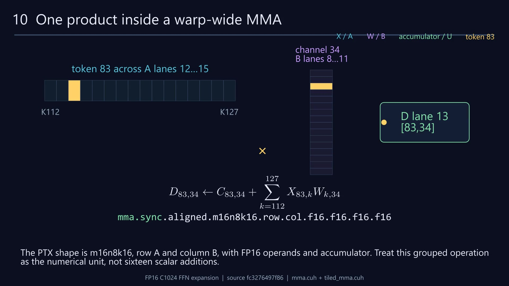
- 6:04
This is a collective operation: all 32 lanes execute the same MMA instruction. A lane does not independently multiply only its own A and B registers.
- 6:12
Our selected product uses X[83,114] from A lane thirteen and W[114,34] from B lane nine. The result contributes to D lane thirteen.
- 6:20
The hardware operand network brings matching K values together. This highlight explains logical data dependency, not an exposed physical multiplier or register-bank route.
- 6:29
Our highlighted product is one of sixteen K contributions. The instruction updates all 128 elements of its M16 by N8 result, using Half accumulation.
- 6:38
The PTX shape is m16n8k16, row A and column B, with FP16 operands and accumulator. Treat this grouped operation as the numerical unit, not sixteen scalar additions.
11 Reuse operands; keep the output live
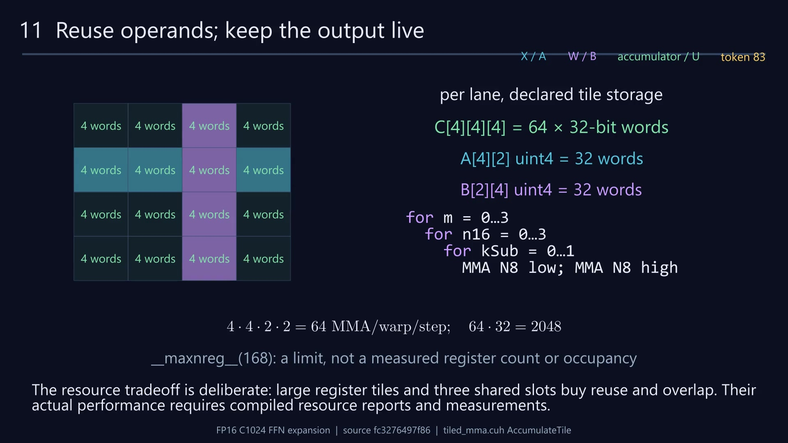
- 6:48
Each lane keeps 64 accumulator words alive across the entire reduction. The declared input and weight tiles each add 32 words; compiler allocation may differ.
- 6:57
The unrolled issue order is M, then N16, then K subtile, with lower N8 before upper N8. K0 reaches each accumulator before K1, preserving the intended Half ordering.
- 7:08
One A fragment is reused across eight N8 column fragments. One B fragment is reused across four M16 token fragments, reducing repeated operand traffic.
- 7:17
There are 64 MMA instructions per warp per step, or 2048 across 32 steps. No partial accumulator tensor is written to global memory between steps.
- 7:25
The resource tradeoff is deliberate: large register tiles and three shared slots buy reuse and overlap. Their actual performance requires compiled resource reports and measurements.
12 The fused Half activation
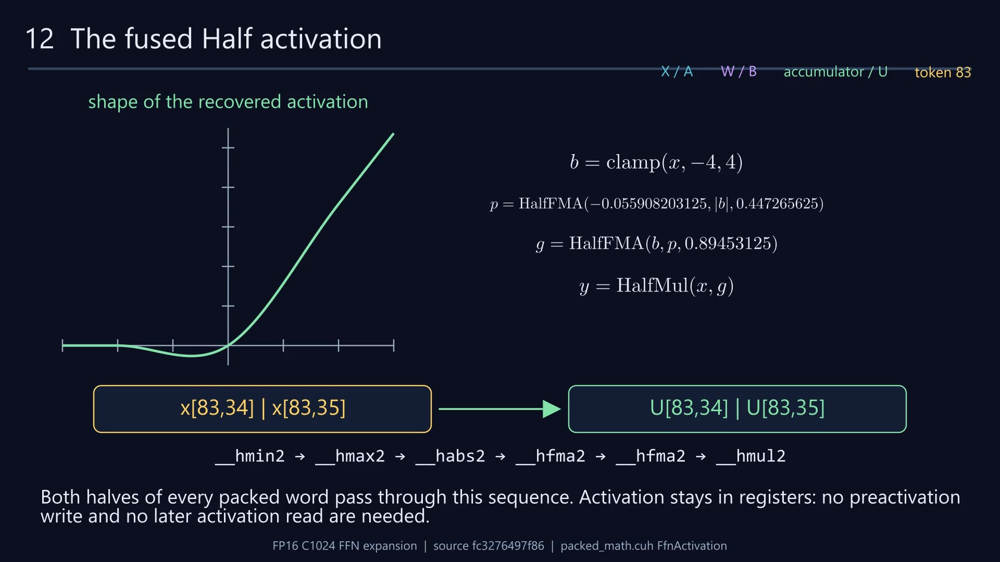
- 7:36
After all 1024 channels have been reduced, the kernel applies its recovered clamped polynomial. The graph shows the real-valued shape; execution uses ordered Half operations.
- 7:46
Clamp x to obtain b, take absolute b, then evaluate the first Half fused multiply-add. Its constants are exact values from the source.
- 7:53
The clamp evaluates the upper minimum before the lower maximum. Preserve that order, the Half2 intrinsics and their NaN behavior when reconstructing the helper.
- 8:03
A second Half fused multiply-add forms the gate. The final Half multiplication uses the original, unclamped x. Replacing this with standard SiLU changes the function.
- 8:12
Both halves of every packed word pass through this sequence. Activation stays in registers: no preactivation write and no later activation read are needed.
13 Four words become one packed store
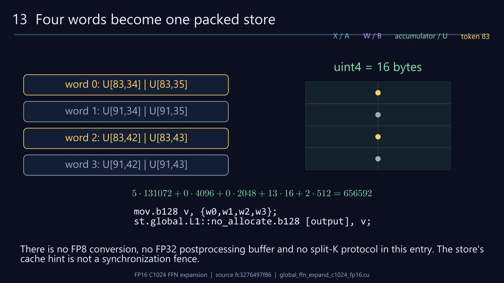
- 8:22
For output group five and N16 group two, lane thirteen assembles four Half2 words directly into a uint4. Token 91 is a packing companion, not an input dependency.
- 8:31
The vector interleaves token rows 83 and 91, and channel pairs 34–35 and 42–43. It is already the layout expected by the next native tensor consumer.
- 8:39
Our selected result is the low Half at output base plus 656592 bytes. StoreNoAllocate writes the sixteen-byte vector with an L1 no-allocation cache hint.
- 8:48
There is no FP8 conversion, no FP32 postprocessing buffer and no split-K protocol in this entry. The store's cache hint is not a synchronization fence.
14 Finish the token and handle boundaries
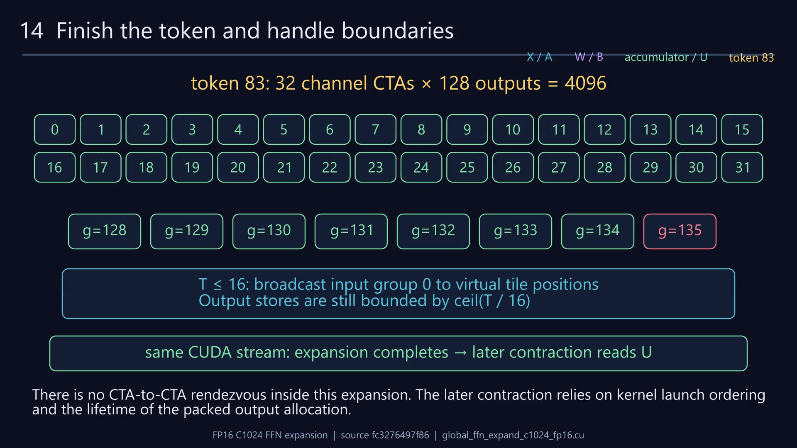
- 8:57
Our chosen CTA supplies only channels zero through 127. Thirty-two channel blocks independently finish token 83's complete 4096-channel expansion.
- 9:06
At T equal to 2160, the final token tile has seven valid groups, or 112 rows. Group 135 is invalid: its input slab is zero-filled and its output store is skipped.
- 9:15
For the separate small-Half path, T at most sixteen broadcasts input group zero across virtual positions. Only group-bounded stores are allowed; callers provide padded group storage.
- 9:25
There is no CTA-to-CTA rendezvous inside this expansion. The later contraction relies on kernel launch ordering and the lifetime of the packed output allocation.
15 Reconstruct the complete journey
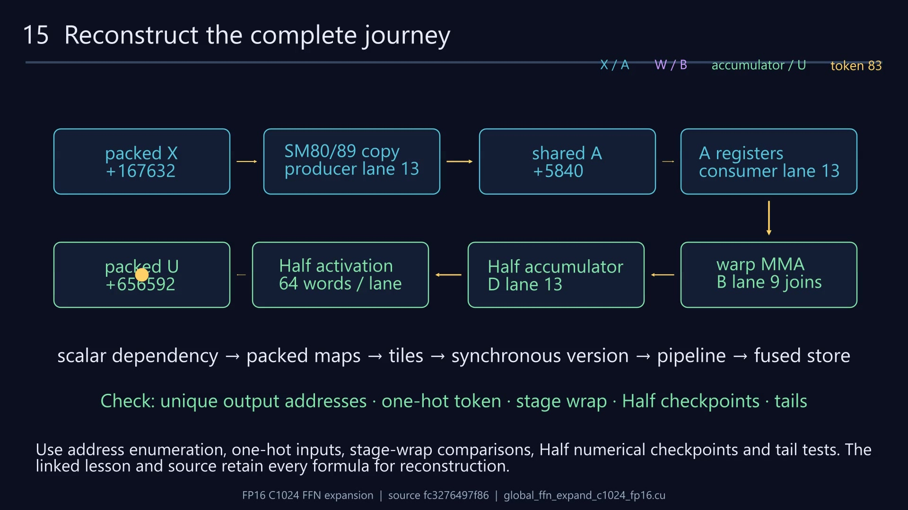
- 9:35
Now follow the single gold contribution once more: packed global X, an asynchronous stage copy, a native shared panel, then the consumer's A registers.
- 9:47
Weights arrive directly in B registers. Warp-wide MMA combines lanes and accumulates through all 32 steps; the fused Half activation then transforms the final result.
- 10:00
To rebuild the kernel, first verify the scalar dependencies and packing maps. Implement a synchronous tiled version before adding the three-slot pipeline and fused publication.
- 10:10
Use address enumeration, one-hot inputs, stage-wrap comparisons, Half numerical checkpoints and tail tests. The linked lesson and source retain every formula for reconstruction.